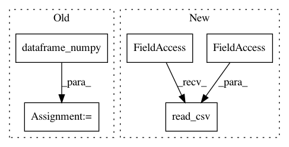

176d04bd5187c84f2cf9b89f84bbfe19d61c4c3d,tests/integration_tests/functional_api_test.py,,test_text_and_structured_data,#Any#,21
Before Change
// Prepare the data.
num_instances = 80
(x_text, y_train), (x_test, y_test) = utils.imdb_raw()
(x_structured_data, y_train), (x_test, y_test) = utils.dataframe_numpy()
x_text = x_text[:num_instances]
x_structured_data = x_structured_data[:num_instances]
y_classification = utils.generate_one_hot_labels(
After Change
// Prepare the data.
num_instances = 80
(x_text, y_train), (x_test, y_test) = utils.imdb_raw()
x_structured_data = pd.read_csv(utils.TRAIN_CSV_PATH)
x_text = x_text[:num_instances]
x_structured_data = x_structured_data[:num_instances]
y_classification = utils.generate_one_hot_labels(
In pattern: SUPERPATTERN
Frequency: 4
Non-data size: 5
Instances
Project Name: jhfjhfj1/autokeras
Commit Name: 176d04bd5187c84f2cf9b89f84bbfe19d61c4c3d
Time: 2020-08-01
Author: jin@tamu.edu
File Name: tests/integration_tests/functional_api_test.py
Class Name:
Method Name: test_text_and_structured_data
Project Name: jhfjhfj1/autokeras
Commit Name: 176d04bd5187c84f2cf9b89f84bbfe19d61c4c3d
Time: 2020-08-01
Author: jin@tamu.edu
File Name: tests/autokeras/adapters/input_adapter_test.py
Class Name:
Method Name: test_time_series_input_less_col_name